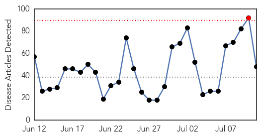
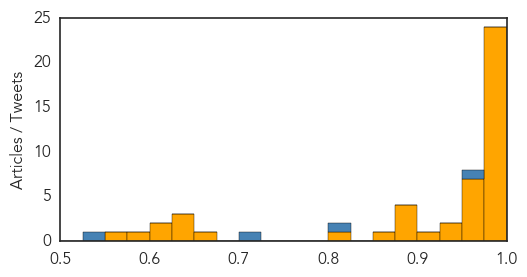
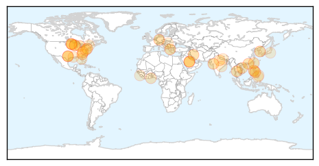

Ebola
30-Day Web Trend
1 alerts, 0 warnings

30-Day Twitter Trend
1 alerts, 0 warnings

Article Locations

Article Confidences
Top Articles:
- 1.000
- New Ebola Case in Liberia from Virus Similar to Past Cases
- 1.000
- Ebola-hit hospital in Monrovia Is Awaiting Recovery
- 1.000
- New Ebola case found as workers protest pay
- 1.000
- Ebola Strain in New Liberia Cases Same as Virus From Last Year's Outbreak
- 0.999
- 'Every nation' must help in fight against Ebola: Liberia
- 0.999
- Liberia Ebola linked to virus, tests show
- 0.999
- Fact Sheet: EU response to the Ebola outbreak in West Africa - Liberia
- 0.999
- Three in three days: Liberia records third ebola case
- 0.998
- Ebola virus probably latent in Liberia
- 0.998
- At United Nations conference, $3.4 billion pledged to fight Ebola
- 0.998
- Ebola: Tanzanian nurse in self-quarantine after serving in Liberia
- 0.997
- UN Pledges $3.4B To Rebuild Health Systems, Economies Of Outbreak Areas
- 0.995
- African nations seek billions for Ebola
- 0.995
- Ebola Strain in New Liberia Cases Same as Virus From Last Year’s Outbreak
- 0.994
- Ebola-hit countries seek billions for recovery at UN
- 0.994
- Ebola in Liberia: Genetic testing shows strain same as previously circulating virus
- 0.993
- President warns against Ebola complacency
- 0.993
- Ebola-hit countries seek billions for recovery at UN
- 0.993
- UN Secretary General Ban Ki-Moon says that Presidents Condé, Koroma and Johnson Sirleaf have shown admirable statesmanship.
- 0.990
- Ban Ki-moon Calls for Building Strong Health Systems, Withstand Future Ebola Outbreak
- 0.988
- Donors pledge billions for Ebola recovery
- 0.984
- Donors pledge billions for Ebola recovery
- 0.983
- Extra aid pledged for 3 Ebola-hit African states
- 0.977
- Donors Pledge Billions for Ebola Recovery
- 0.975
- Donors Pledge Billions for Ebola Recovery
- 0.973
- “Get to Zero, Stay at Zero” – The Comprehensive Plan to End Ebola
- 0.969
- Ethical to use untested Ebola drugs, says WHO
- 0.962
- President Mugabe Ebola Conference Full Speech
- 0.958
- Pledges of $3.4bn for Ebola recovery - Africa
- 0.956
- We need precautionary measures against Ebola – Pharmaceutical Society
- 0.956
- African Nations Seek Billions for Ebola Recovery
- 0.945
- Sierra Leone Observes WAHO Day Health Services Workers Union calls for Health Workers Safety
- 0.940
- The Comprehensive Plan to End Ebola — Global Issues
- 0.923
- Sierra Leone: USAID announces $266 million to support recovery efforts in ebola-affected countries
- 0.896
- EU Commission to pledge approximately €450m to support recovery of 3 countries
- 0.891
- Out of Africa: UCLA physician reflects on the risks, rewards of treating Ebola patients
- 0.888
- Pledges of $3.4 billion for Ebola recovery made at United Nations
- 0.875
- Pledges of $3.4 billion for Ebola recovery made at United Nations
- 0.865
- Pledges of 3.4 bln dollar for Ebola recovery made at United Nations
- 0.815
- World Vision Ghana donates to MOH
- 0.667
- The UK will stay the course in Sierra Leone until Ebola is defeated - Sierra Leone
- 0.640
- DIASPORA AFFAIRS SIGNS MoU WITH SLCU-THE NETHERLANDS
- 0.635
- In Guinea, radio helps schoolchildren catch up on learning
- 0.630
- Treating Ebola patients rewarding for local nurse
- 0.619
- Conference convenes to present national Ebola recovery strategy in Africa
- 0.601
- International pledges now pouring for West African Nations road to recovery after Ebola
- 0.575
- Nurse shortage an ongoing problem in healthcare system
- 0.556
- Safety, Security at Bio Labs Open to Interpretation, Not Matter of Law
Top Tweets:
- 0.969
- Liberia confirms 2 new Ebola cases - Dispatch Times http://t.co/fF7yA1B8wY ebola EVD
- 0.918
- Treating Ebola patients rewarding for local nurse - Macon Telegraph (blog) http://t.co/JGeOsij8TN ebola EVD
- 0.889
- Ebola Update: 27,585 confirmed, probable & suspected cases reported in 3 most affected countries, with 11,253 deaths. EbolaResponse
- 0.745
- Treating Ebola patients rewarding for local nurse - http://t.co/mW94UDZ1Bn http://t.co/ygMU305KiA ebola EVD
- 0.625
- Japan pledges additional $12 million for fight against Ebola - The Japan Times http://t.co/MOlScIyKUW ebola EVD
- 0.587
- Ebola: la Banque mondiale s'inquiète des conséquences de la pénurie de personnel médical https://t.co/Uu0sjyVy5k http://t.co/RxA63vq5PA
- 0.574
- Health scare over: N.J. man has malaria, not Ebola http://t.co/iPyNUiiC2E via
- 0.515
- Donors Pledge $3.4 Billion for Ebola Recovery Plan - Wall Street Journal http://t.co/wdRw1DvpgX ebola EVD
- 0.505
- Lack of people, supplies and money plague Africa's Ebola fight - experts:... http://t.co/v0QQwFYit7
Unknown
30-Day Web Trend
0 alerts, 0 warnings

30-Day Twitter Trend
0 alerts, 0 warnings

Article Locations
Article Confidences

Top Articles:
- 0.994
- Foreigner with MERS in Philippines now free of the virus
- 0.994
- KBS World Radio
- 0.990
- South Korea reports 36th MERS death
- 0.977
- Korean cardinal praises medics' courage in face of Mers outbreak
- 0.951
- Lacey motel reopens after 3 cases of Legionnaires’ disease
- 0.951
- Deadly Squirrel Virus Kills 3 Breeders In Germany; Previously Unknown Bornavirus Causes Encephalitis
- 0.943
- Seoul Cardinal Praises Catholic Hospitals for Response to Epidemic
- 0.943
- Salmonella Week - Marler Clark is on it
- 0.921
- Health officials collect 25 sand-fly samples from Vadodara
- 0.917
- Chicago Tribune
- 0.917
- Chicago Tribune
- 0.917
- Chicago Tribune
- 0.917
- Chicago Tribune
- 0.917
- Chicago Tribune
- 0.897
- Hantavirus case in Texas Panhandle prompts precaution reminder
- 0.879
- The World On Arirang
- 0.872
- State finds regional hantavirus infection
- 0.858
- Washington state vet sees chance for worse bird flu season
- 0.828
- 8 ways to virus-proof yourself, Others news, Health News, AsiaOne YourHealth
- 0.822
- Fear of deadly water parasite is high, risk in Minnesota is low
- 0.780
- SGGP English Edition- Health Minister lauds group of medical workers being in risk of exposing HIV for saving patient
- 0.762
- State stresses water safety despite low amoeba infection risk
- 0.749
- Kidney disease hits Cuttack blocks
- 0.736
- Boy who got brain infection after swimming dies
- 0.692
- 3 Germans are likely to be killed by Squirrel virus
- 0.686
- More women dying through cervical cancer
- 0.584
- Flesh eating bacteria- take precaution when going to the beach
- 0.568
- The Caledonian-Record
- 0.566
- NCDC Officer Tours Anthrax Affected Blocks
- 0.566
- Philippines: Durian candy linked to more than 1,000 food poisoning cases in Surigao del Sur
- 0.529
- ‘Earthquake affects 1.5 million women of reproductive age’
- 0.522
- Cervical Cancer a major concern: Health Ministry pushing for the good health of women and girls in Sierra Leone
- 0.520
- One in 25 hospital patients have an infection caused by their medical care, CDC says -
- 0.504
- Listeria recalls lead to questions
- 0.502
- Authorities scramble after food poisoning cases reach 1,699 in Caraga
- 0.501
- How hospitals can kill. Here's what we can do about it.
- 0.501
- Otsuka : U.S. FDA Approves Otsuka and Lundbeck’s REXULTI® (Brexpiprazole) as Adjunctive Treatment for Adults with Major Depressive Disorder and as a Treatment for Adults with Schizophrenia
Top Tweets:
- 0.675
- Nuevo caso de ébola en Liberia es similar al de epidemia https://t.co/cnGUOIwC5E